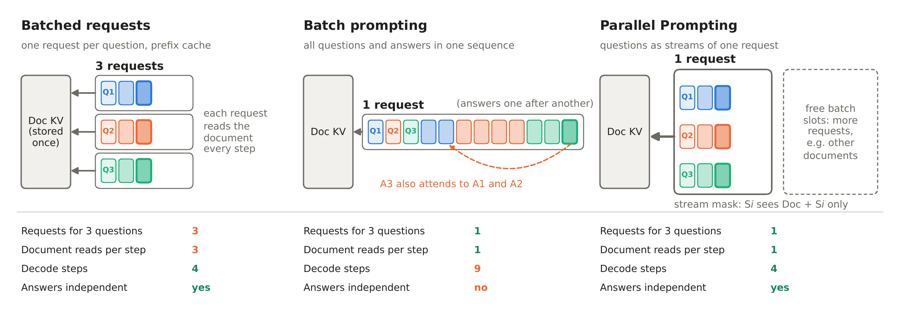

New · 2026
Read Once, Answer Many: Parallel Prompting for Shared-Context LLM Inference
Decodes many questions about one long document as parallel streams of a single request, so each decode step reads the document's KV cache once instead of once per question. Built into SGLang with an in-kernel stream mask, CUDA-graph decoding and continuous batching.
- 3.7×faster than SGLang, A100
- 5.9–6.0×faster, RTX A6000
- 144 / 144paired runs faster